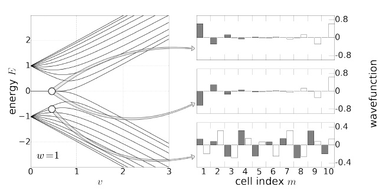

What is the difference between insulators and conductors?
This question was answered by the Nearly free electron model. It showed that the possible energies of an electron are represented by the graphs below. At low temperatures the energy states become filled up to
a specific energy called the Fermi energy. If the Fermi energy is in the gap, the electron would need to jump the gap in order to move, but it doesn't have enough energy to do so, therefore it can't move, meaning it can't carry electrical current.
If the Fermi energy crosses an "energy band"(a space with a lot of energy states) the electron is free to move, making the material conductive.
Image from Klingshirn C.F.[1](altered) depicting the transition from the extended zone to the reduced one.
The two zones presented are equivalent. The second representation is more convenient as it makes measuring the gap visually easier.
However, this model doesn't predict topological insulators. For that the SSH model is needed.
Exploring the Su–Schrieffer–Heeger(SSH) model
Image from Asboth J.K., Oroszlany L., Palyi A.[2] depicting a representation of the SSH model.
It describes spinless fermions hopping on a 1D chain. Therefore, it can be used to approximate an electron in a polymer by neglecting the spin interactions.
The system can only be solved numerically, unless one of the parameters (v or w) are fixed. So, how does this model behave?
Fig. 1 - Image from Batra N., Sheet G.[3] depicts the energy bands of the SSH model (zero energy set up as Fermi energy).
This graphs show that the system describes a conductor only when w = v and an insulator otherwhise. This means that this model agrees with the previous one.
However, in order to get more information the eigenfunctions need to be ploted.
Image from Batra N., Sheet G.[3] depicts the eigenvectors of the SSH model (zero energy set up as Fermi energy).
This plots show that the cases wv are not equivalent, unlike in Fig. 1. The w>v case includes the origin and the wv case has a winding number of one, a concept originated in topology.
Now it is clear that the SSH model retains the division between conductors and insulators proved by the near free electron model. But, it also shows that not all insulators are the same.
So what makes the insulator with a winding number of one so special?
Consider a chain of 10 atoms.
Image from Batra N., Sheet G.[3](altered) depicts eigenvalues (zero energy set up as Fermi energy).
The cases w>v have zero energy states. This cases are the ones with a winding number of one. So, it is clear that the topology of the insulator affects its caracteristics.
But, since the zero energy states break the gap, how can it remain an insulator?

Image from Asboth J.K., Oroszlany L., Palyi A.[2] depicts the wavefuntion of energy states (zero energy set up as Fermi energy).
This plots are the final pice of the puzzle. The first subplot shows the energy distribution with the fermi energy at the origin associated with their wavefuntions.
While the second part of the figure depicts where in the atom chain two of those energy states can be found. The cell index represents an atom's number if counted.
As such, the gap breaking zero energy states are found on the edges of the material, while the rest are approximatively equaly spread. For this reason topological insulators only conduct electricity on the edge.
Conclusion
Topological insulators are a type of electrical insulator that can carry current on their edge. This is becuse of their non zero winding number.
Since the concept and mathematics of the winding number have been developed in topology, the insulator was named after the field.
In order to understand such material one must understand the near free electron model ,and more specifically, the SSH model.
The non trivial topology of some insulators is clear only after investigating the eigenvalues. While, the edge specific behaviour is found by investigating the wavefunction of the zero energy state.
All this characteristics come toghether to describe a fascinating material.